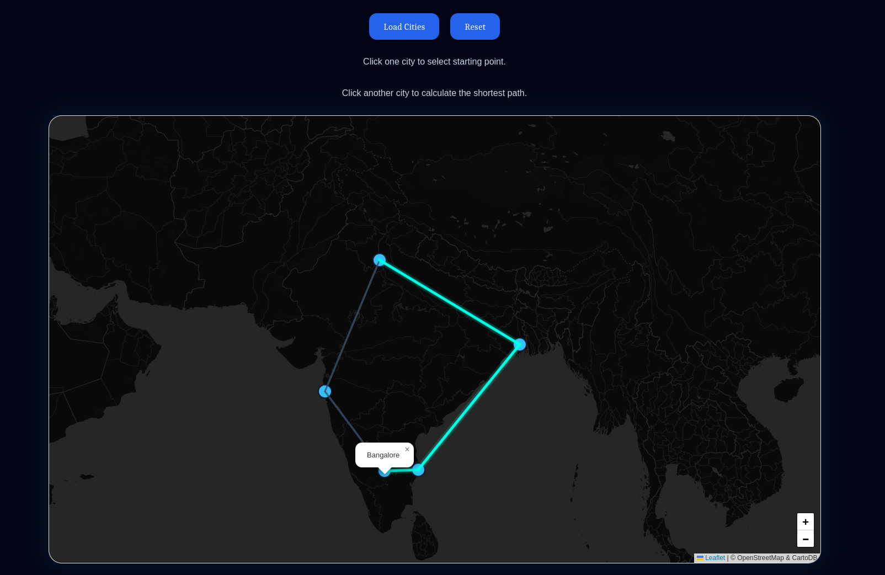
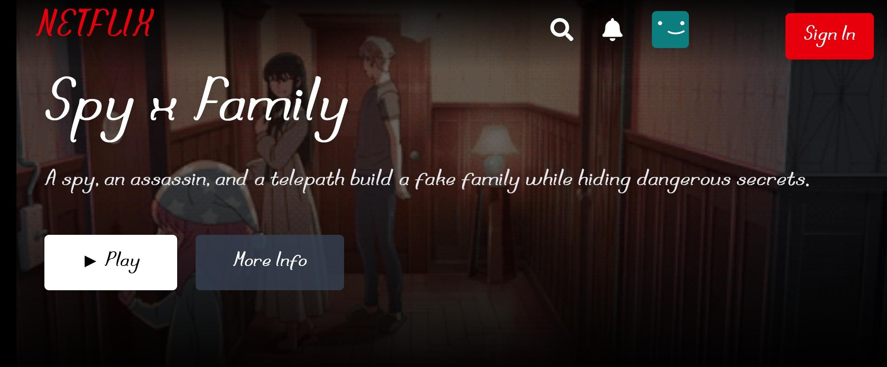

Projects
Person & Object Detection AI
Real-time detection running entirely in the browser — identifies people and objects from a live webcam feed using TensorFlow.js.
- Live webcam detection
- Real-time bounding boxes
- Person detection
- Multi-object recognition
- AI confidence scores
- Smooth animations
Play Tic Tac Toe Against AI
A Minimax-driven engine with adaptive difficulty — Easy plays loose, Hard plays optimally and is effectively unbeatable.
Cookie Tracker (PHP/Java/JS)
A multi-language implementation of the same feature in three stacks — reads and stores your name and location via browser cookies.

GeoPath AI
Route optimization over a real map graph using Dijkstra's Algorithm — pick two cities and watch the shortest path resolve with live animated path-tracing.
- Interactive map routing
- Real-time shortest path calculation
- Dijkstra graph algorithm
- Click-based city selection
- Animated route visualization
- Responsive map interface

SmartPath Navigator
DSA-driven navigation engine implementing shortest-path algorithms with interactive graph and map visualization.

Kira Stream
Netflix-inspired streaming UI — responsive layout, smooth transitions, and componentized front-end architecture.